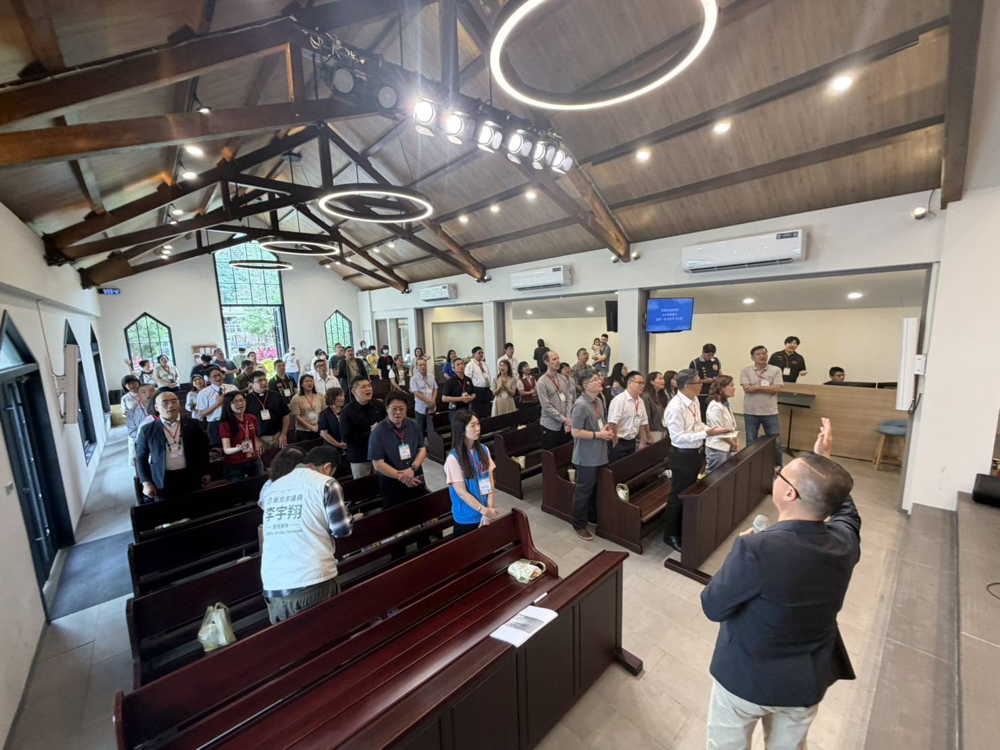
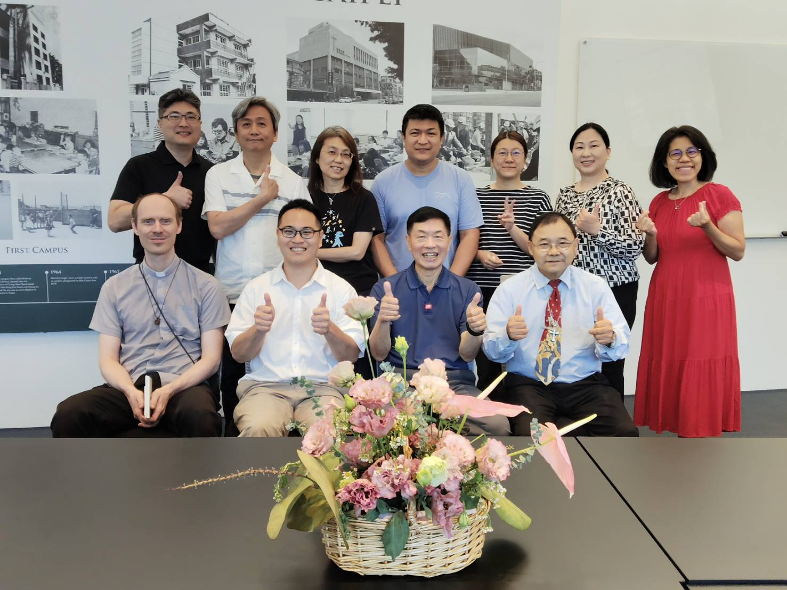
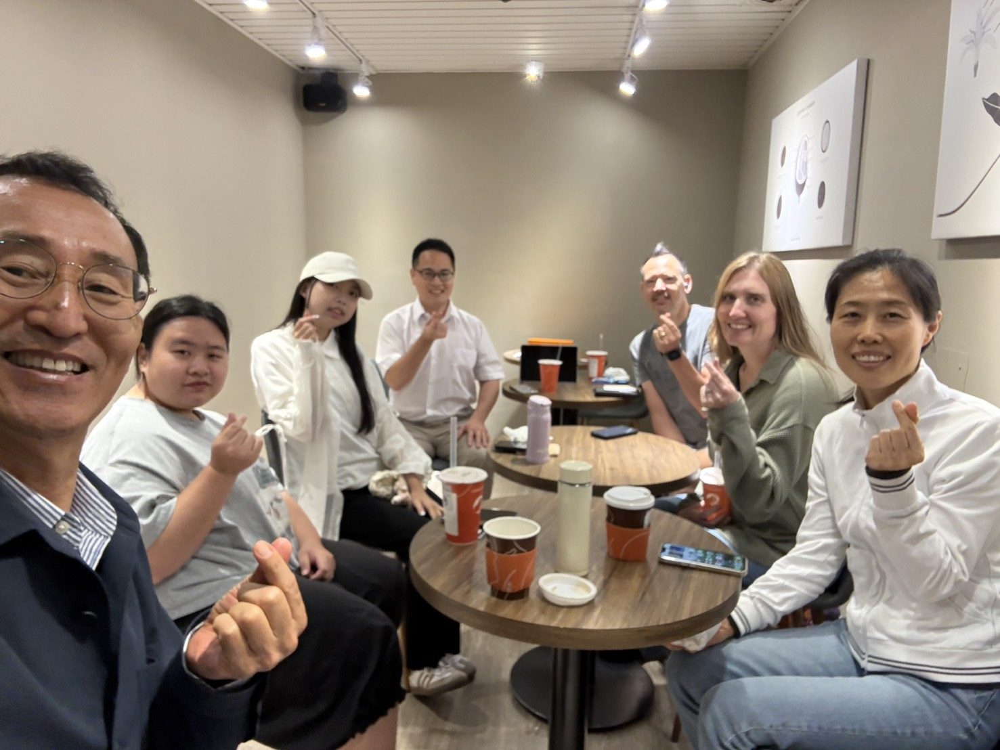
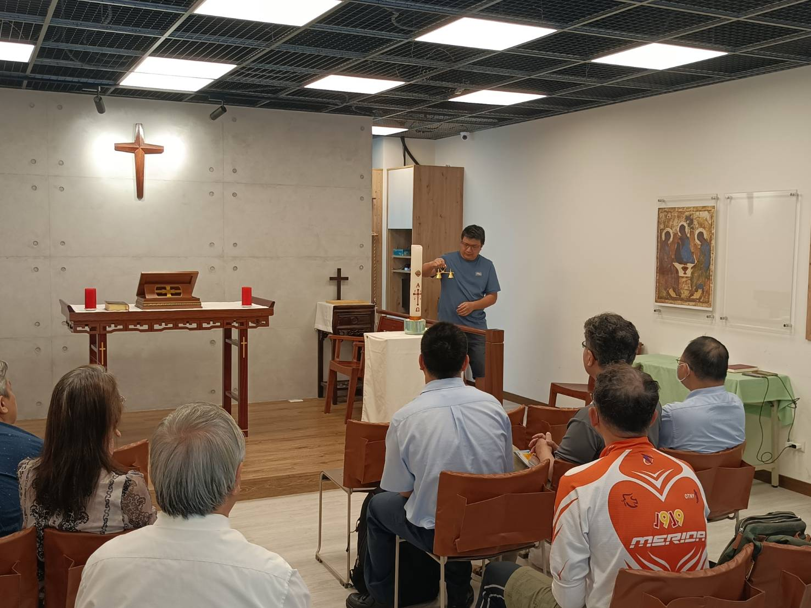
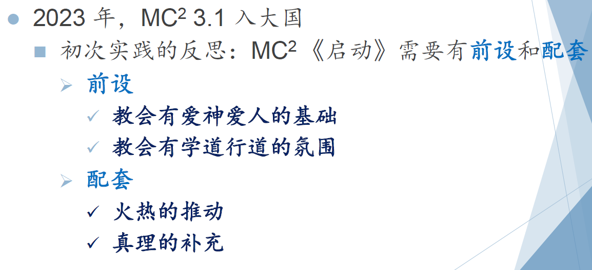
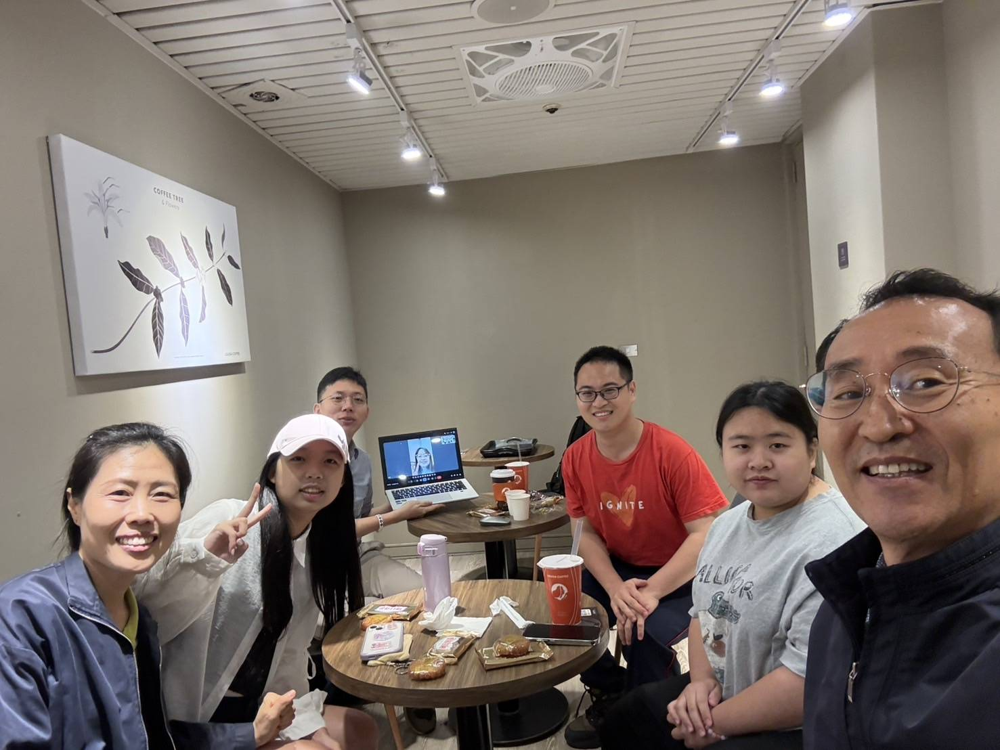

代禱信摘要
邀請您透過閱讀，參與在我的每一段屬靈旅程中。
近三個月動態
六月：【操練與跨越】身心靈的重塑與擴張
2026.06隨著錢牧師返韓述職，這個月我接受了密集的個人成長訓練。不僅在體態上有了突破（從 XL 瘦到 L！），在讀經與時間管理上也建立起全新紀律。同時，我也積極參與泰山、五股、林口區的聯合早禱會，並拜訪馬禮遜美國學校的牧者，看見長期深耕校園帶來的福音影響力。期盼這些操練與看見，能為下半年的事工帶來嶄新的突破。
與陳偉斌傳道合影

泰山五股林口聯禱會

拜訪馬禮遜美國學校
五月：【連結與反思】跨界宣教與點燃生命之火
2026.05這個月我們在長庚大學與美國宣教士夫婦建立了美好的同工關係，透過英文角落拓展福音接觸面。我也走訪了多間在地教會與機構，深刻體會到「教會倍增（MC²）」的關鍵不僅在於神學知識，更在於真實相愛與行道的熱情。求主持續調整我的眼光，讓我能用基督的愛去建立有溫度的生命連結。

與美國宣教士交流

參訪聖公會聖多馬堂

MC² 教會倍增研討
四月：【恩典與啟航】死蔭幽谷中的亮光與東京短宣
2026.04四月經歷了父親驟逝的變故，但在悲傷中卻經歷了神極大的安慰，甚至有機會向弟弟分享福音。回到桃園後，看見新的慕道友穩定參與聚會，也開始籌備今年八月的日本東京短宣（日暮里國際教會）。雖然充滿未知的挑戰，但深信神將帶領我們的團隊，將福音的種子撒在有需要的地方。
追思與感恩

新同學安宜（右中）加入

東京短宣線上籌備會